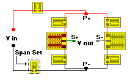

Strain Gage Based Transducer reference
The final circuit adjustment is to set the span to some predetermined level. This is accomplished by inserting a temperature-insensitive (low-TC) resistor in series with the bridge excitation supply. A suitable resistor configuration for this purpose is the D pattern, with the alloy (constantan or K-alloy) selection based on the resistance range desired (the resistor alloy does not have to match the strain gage grid alloy). The nominal resistance can be determined by measuring the total impedance of the circuit (including the Balco span-shift resistor) and then calculating the further attenuation needed to bring the bridge output to the desired span. With the span-set resistor in place, successive span tests and resistor adjustments can be used to converge on the specified output level.

In actual practice, the most expedient procedure for accomplishing the foregoing circuit refinements is to initially calculate the approximate values of the span-shift compensation and span-set resistors, and then install and wire all four resistors on the spring element along with the strain gages. Subsequently, and prior to applying a protective coating, the resistors can be adjusted as described here to obtain the desired transducer performance.
It should be realized that the foregoing procedures for output adjustment and compensation account primarily for first-order effects on transducer performance. The achievement of still greater precision necessitates further circuit refinement, usually involving the use of more auxiliary resistors. In compensating span shift with temperature, for example, the inserted high-TC resistor normally introduces a degree of nonlinearity in the output. Reducing the latter effect requires, in turn, additional linearizing resistors. Compensation techniques for higher-order effects such as this are beyond the scope of the present treatment.